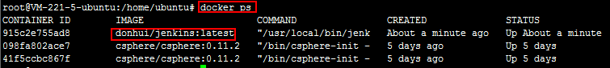

摘要: 使用docker构建jenkins镜像并运行容器
目录：
1、基于docker官方的jenkins镜像启动容器
2、使用源码构建jenkins镜像并运行容器
3、使用csphere产品对容器、镜像、主机进行管理
docker近两年很火，最近在听cSphere希云主办的docker培训，
之前也参加过docker相关的技术沙龙（如docker meetup）。
同时也使用Jenkins近两年，所以尝试使用docker构建jenkins镜像、运行基于镜像的容器。
因为听希云的docker培训获得了一张200元的腾讯云代金券，
所以用代金券在腾讯云上购买了个云服务器用来进行docker的练习，
DockerHub上有docker官方jenkins镜像：
https://registry.hub.docker.com/_/jenkins/
同时github上有其源码：
https://github.com/jenkinsci/docker
官方jenkins镜像中所使用的jenkins是Jenkins的LTS（Long Term Support）发布版本。
1、基于docker官方的jenkins镜像启动容器
运行命令为：docker run --name myjenkins -p 8080:8080 -v /var/
jenkins_home jenkins
docker run --name myjenkins -p 8080:8080 -v /var/jenkins_home jenkins使用docker images查看镜像信息：
使用docker ps查看运行的容器信息：
通过web界面访问jenkins：

2、使用源码构建jenkins镜像并运行容器
使用git clone源码到本地：
git clone https://github.com/jenkinsci/docker.git
切换到docker目录下并使用docker build命令构建镜像：
cd docker
使用docker build+Dockerfile构建jenkins镜像：
docker build -t donhui/jenkins .
镜像构建成功后（总共21个Step，Dockerfile共21条指令），使用docker images查看镜像，
donhui/jenkins和官方的jenkins镜像大小相同：
使用docker ps查看运行的容器信息：
使用docker stop 71150c3aabc6停止之前基于官方jenkins镜像启动的容器：
基于donhui/jenkins镜像启动容器，
docker run --name donhui_jenkins -p 8080:8080 -v /var/jenkins_home donhui/jenkins
使用docker ps查看运行的容器信息：

通过web界面访问jenkins：
3、使用csphere产品对容器、镜像、主机进行管理
查看容器donhui_jenkins信息：
查看镜像donhui/jenkins:latest信息：